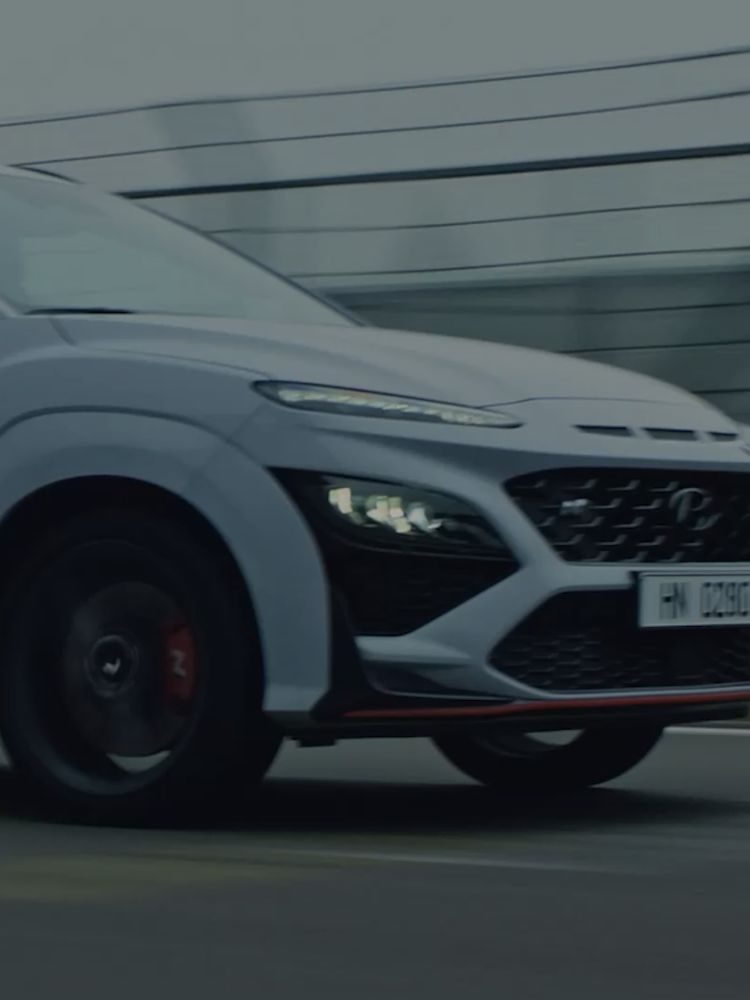
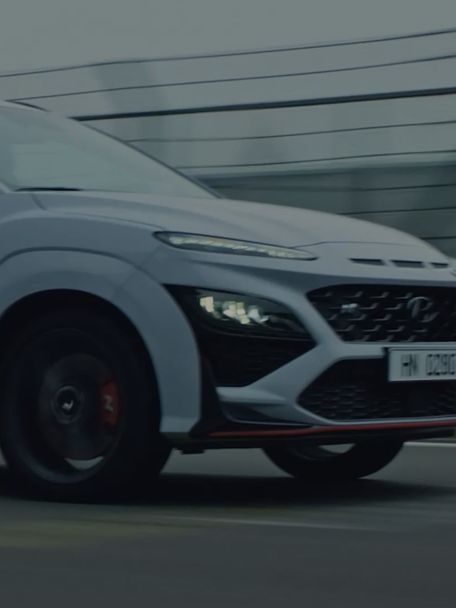
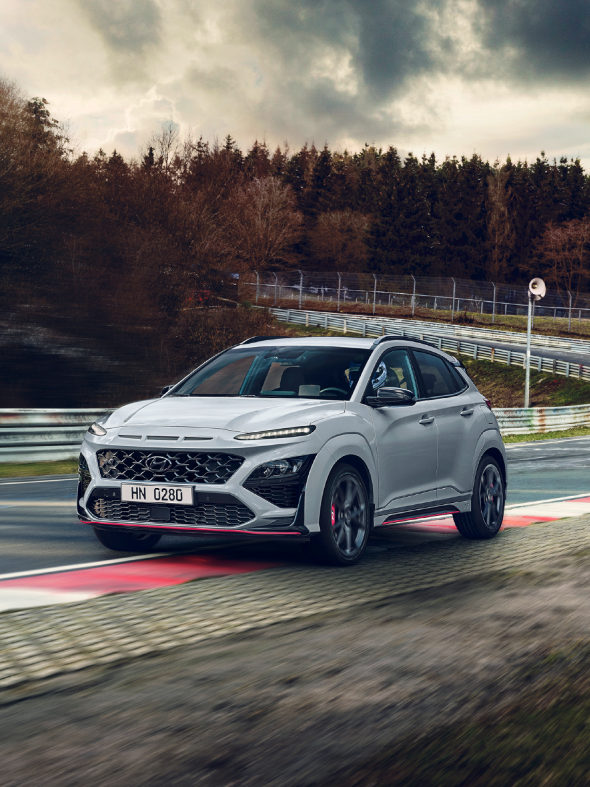
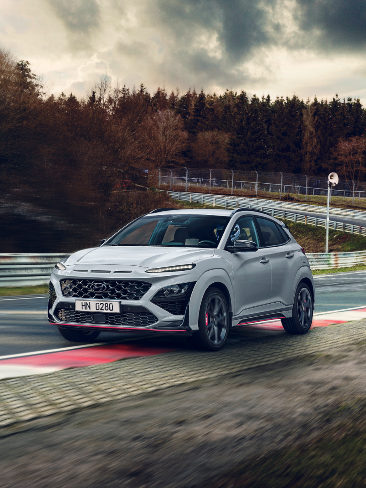
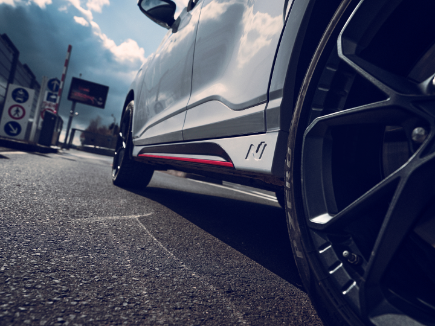
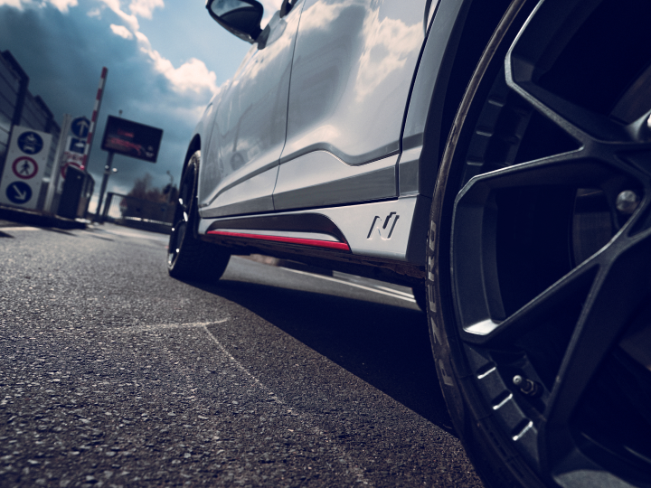
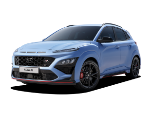
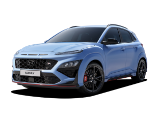

The all-new KONA N
Yes. it’s N
 

Overview
Regardless of car type,
even if it’s an SUV.
The KONA N can carve corners, provide an agile response, and is always ready for the track. All of these without compromising the versatility of an SUV. Finally, a performance car the whole family can enjoy. The KONA N is not your ordinary SUV. It’s a True Hot SUV. It’s N.
 

Performance
Smart Shift Integrated Power
The KONA N is powered by a 2.0L turbocharged GDI engine with 8-speed wet DCT. The N DCT offers three exclusive high-performance functions:N Power Shift (NPS), N Grin Shift (NGS) and N Track Sense Shift (NTS), all of which maximize exhilarating driving pleasure.The powertrain delivers maximum power of 280ps, which potentially reaches up to 290ps with the N Grin Shift, and maximum torque of 40.0 kgf·m.The engine offers a flat power that prolongs maximum power at high RPM and enhances acceleration for even more fun, be it on the road or racetrack.
280pspower
40.0kgf·mMax. torque
5.5Seconds0-100km/h
E-LSD for dynamic cornering and refined traction control
For the KONA N, E-LSD (Electronically-controlled Limited Slip Differentials) does not only provide that corner-carving feeling. It is specifically tuned to give it enough traction so you can drive at ease on any road condition.


Going beyond the limit of an SUV
For an SUV to endure extreme driving conditions, having a strong body structure is crucial. The KONA N's body structure has been reinforced with added body welding points and a modified strut ring structure to meet this expectation. Simultaneously, forged wheels and aluminum lightweight knuckles complete the ideal geometry that of a performance SUV.
 

High-performance brake
When attacking corners, you want to brake as late as possible. With the Kona N, you can take braking to the limit because it‘s equipped with enhanced pre-fill braking logic, making you more confident on the road. The brake pads’ high friction material along with bigger front and rear discs help maximize heat endurance.

Design
The integrated dynamic driving spirit
The KONA N delivers performance that complements its distinctive sporty design. The dynamic driving spirit coherently flows from the engine to the exterior for a sporty look and aerodynamic performance.

Front
Upper grille with a dedicated mesh incorporates both the N logo and the tinted chrome Hyundai emblem.
Side
At the lower edge of the bumper, the N exclusive red accent skirts around the lower body. The 19-inch light-weighted forged wheels at all four corners create powerful visual aggression.
Rear
Large double-wing roof spoiler for enhanced downforce, enabling a more stable ride at high speed for an SUV body type.
Emotional driving excitement
The interior conveys an emotional excitement when driving. N specific details such as the steering wheel, performance-blue color accents, shift knob, sports seats, and metal pedals set the tone.


Game-like driving experience
The new 10-inch infotainment and digital cluster system with digitalized elements provides a driving experience as though playing a game. The new ‘N mode design’ delivers information such as lap time and N track map, while the N buttons can be customized to toggle frequently used drive modes. With an exclusive racing HUD that features four driver-optimized information, you can focus solely on the road.
Technology
Dynamic passive safety system
The Advanced Driver Assistance System (ADAS) ensures safe and convenient daily drive at all times. Mainly SCC is applied to the N model for the first time. It’s got FCA / LKA / BCA / SEW / ISLW / DAW / HBA / SCC / LFA / RCCA / RVM / PDW. You name it.
N Track Map
The N Track Map pin-points your exact location for navigation purposes when driving on tracks, based on the database of worldwide tracks stored in the AVN. Moreover, it automatically calculates your lap time.
Traction control with exclusive deep snow mode
With traction control that includes a deep snow mode exclusive to the KONA N, drive at ease in all situations, even on terrain, snow, and mud.
Specification
KONA N
Specification
 

- Engine
- 2.0T GDi
- Transmission
- N DCT
- Power (PS)
- 280
- Max. torque(kgfm)
- 40.0
- Top speed (km/h)
- 240
* Performance summer tires may cause moderate noise in ambient temperatures under 7º C.
* Winter tires recommended for optimal performance in low temperature conditions.
Notice
- Vehicle options and details on this website may vary by country, and some vehicle models may not be available in your country
- All descriptions are subject to change without notice.
- For more detailed information, select your country's dealer website.


Related

The all-new IONIQ 5 N

IONIQ 5 N 2024 World Performance Car Award Winner

Mastering Japanese tracks, one drift at